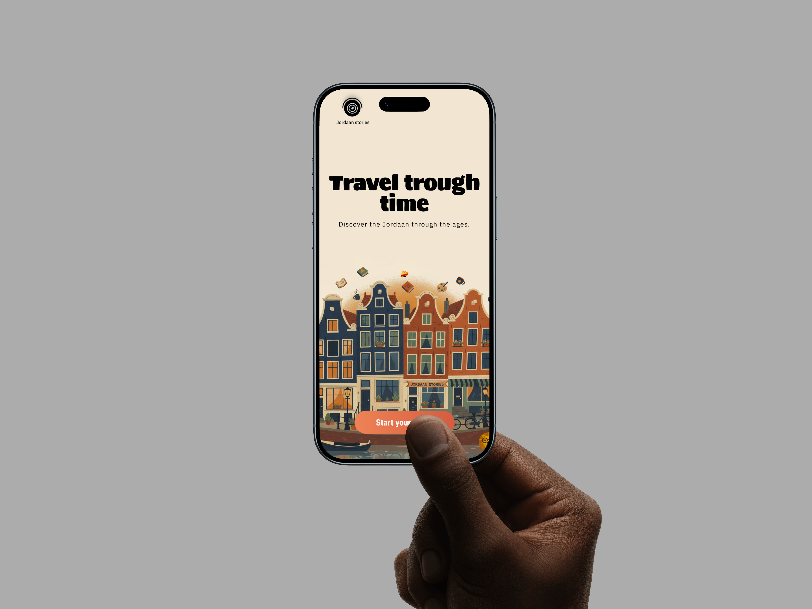
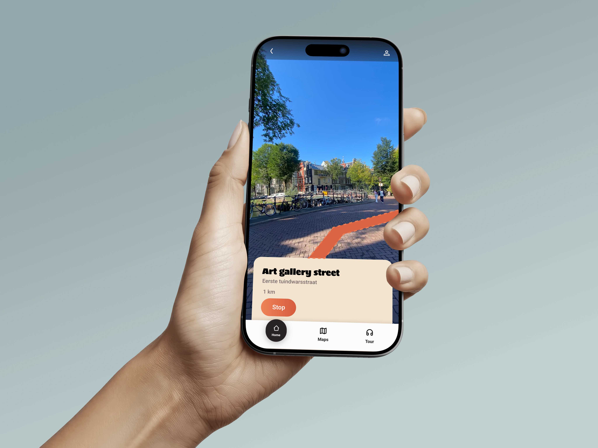
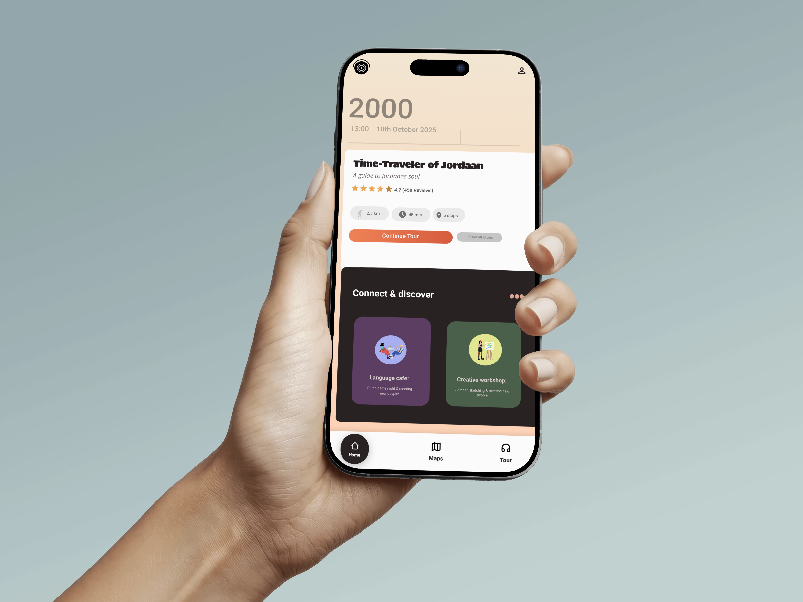

Jordaan Stories Podwalk
A city experience designed for exchange students in the Netherlands who want to explore the city, meet new people, and feel more at home.
About the Assignment
This project was created for students who are new to the Netherlands and want to get to know the city in a fun and social way. The idea was to introduce them to the city through a shared experience, while also helping them connect with other students.
Problem Statement
Through interviews, we learned that many exchange students are looking for connection and often feel a little lonely when they first arrive in a new place. They want to explore the city and meet new people, but it is not always easy to find opportunities to do that naturally. We wanted to design something that made it easier to connect and feel more comfortable in the city.
My Role
- UI Design
- Concept Development
- Interface Design
- UX Design
- User Research
- Interview Insights
- Brand Identity
- Target Audience Focus
- User Experience
Why this concept works
To make the city feel more welcoming, we included experiences like workshops and a language café. These activities gave students a reason to meet each other, connect naturally, and build friendships while discovering the area in a more playful and meaningful way.
Browse the concept
Explore the project and the concept behind it.
Live Demo View on FigmaProject Images




